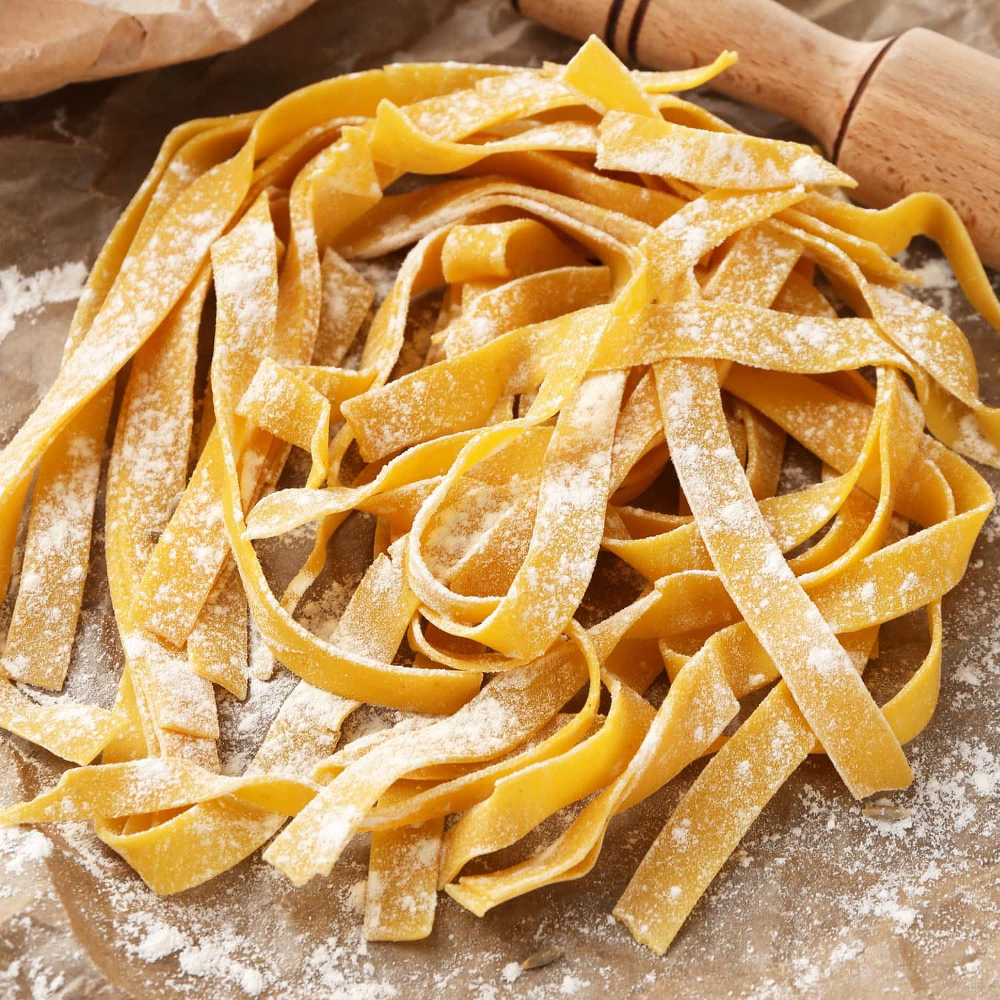

Descripcion
Consite en una masa que se hierve y acompaña con salsa/queso/aceite/etc
ingredientes
- 1 huevos
- 100g harina 0000
- 1 cda. de aceite de oliva
- 1 pizca de sal
Elavoracion paso a pasos
- Poner la harina y la sal en un bol, integrar y hacer un hueco en el medio.
Agregar el huevo y el aceite si eligen agregarle. Batir un poco con una cuchara o tenedor y unir en una masa.
- Una vez que se haya integrado todo muy bien a amasar! Amasar unos 15 o 20 minutos y dejar descansar por media hora.
- En este paso hay que estirar la masa: ya sea con máquina de pastas o con un palo de amasar el proceso es el mismo. Hay que
estirar la masa, doblarla y volverla a estirar. Una y otra vez hasta que quede del grosor que estamos buscando. Si es con la
máquina hay que ir bajando un número cada vez, si es con el palote hay que amasar con más fuerza!
- Se debe cortar en la forma que se prefiera, se espolvorea con harina y se deja orear unos 30 minutos.